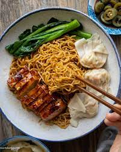
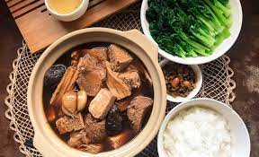

Soy beancurd, also known as tofu pudding or douhua, is a popular East Asian
dessert made from soy milk. It is prepared by coagulating freshly boiled soy
milk with a natural coagulant, such as gypsum or nigari, then allowing it to set
into a soft, delicate custard-like texture. Soy beancurd is often served warm or
cold and can be enjoyed plain or with various toppings such as sweet syrup, ginger syrup, or
red bean paste. Known for its smooth and creamy consistency, soy beancurd is a
nutritious and versatile dessert loved by many for its subtle sweetness and comforting flavor.

Wanton Noodles
Wonton noodles, a beloved Cantonese dish, feature thin egg noodles served with
savory wontons and char siu (barbecued pork). Originating from Guangzhou, China,
this dish has become popular throughout Southeast Asia, known for its comforting
flavors and satisfying textures. The noodles are often cooked al dente and topped
with a fragrant soy sauce-based dressing, offering a perfect balance of sweet and
savory notes. Wonton noodles are commonly enjoyed as a hearty meal in noodle shops
and street stalls, showcasing the region's culinary heritage and culinary craftsmanship.

Bak Kut Teh
Bak kut teh, a popular dish in Malaysian and Singaporean cuisine, translates to
"meat bone tea" in Hokkien dialect. It is a flavorful pork rib soup simmered with
a blend of aromatic herbs and spices, including garlic, pepper, and star anise.
The dish is typically enjoyed with steamed rice and various side dishes, such as
fried dough sticks (you tiao) and chili paste. Bak kut teh is known for its rich,
savory broth and tender pork ribs, making it a comforting and satisfying meal cherished
by locals and visitors alike.